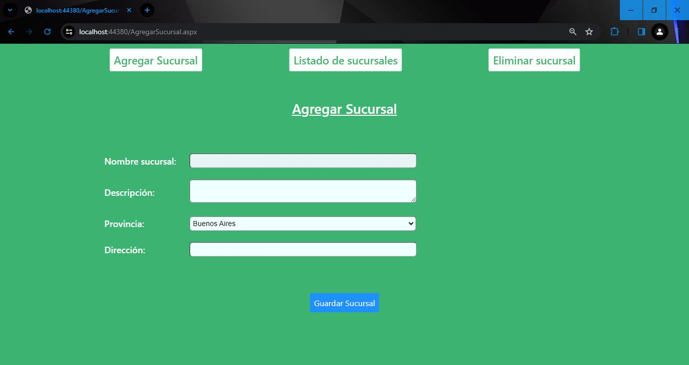
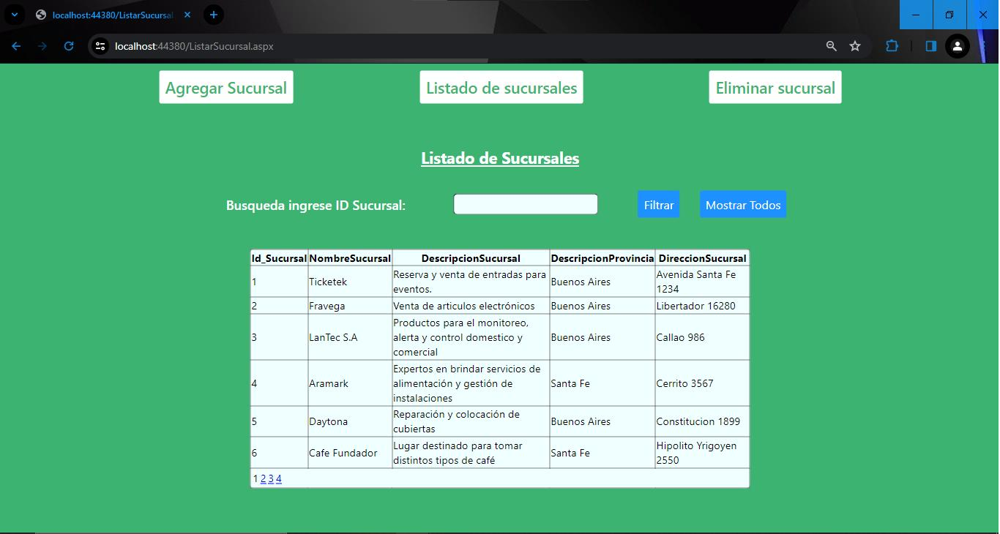
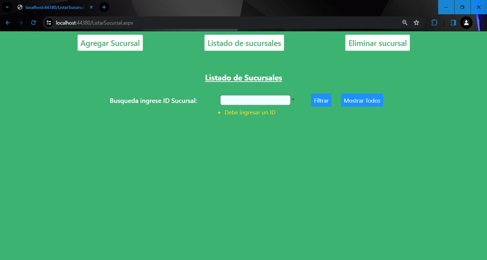
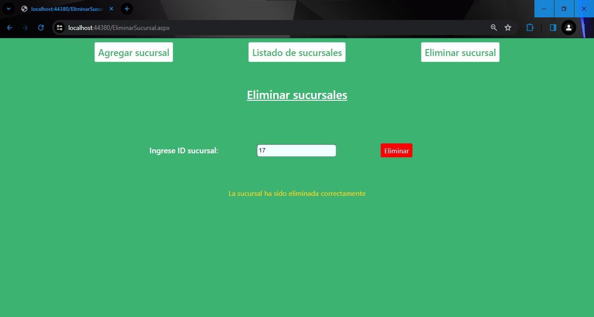

PROYECTO 4: "Gestión sucursales"
Lenguajes de programación utilizados: ASP.Net, C#, SQL.
Sistema de gestión de sucursales con conexión a base de datos.
Es una página web bastante simple pero muy útil para manipular toda
clase de instrucciones (listar, eliminar, modificar y agregar).
-Se utilizaron clases y métodos para organizar y no repetir código de manera
innecesaria
-Se creó el formulario AgregarSucursal.aspx con los siguientes controles:
a) Agregar sucursales: Hyperlink que redirecciona a AgregarSucursal.aspx
(Configurar la propiedad NavigateURL)
Listar sucursales: Hyperlink que redirecciona a ListarSucursal.aspx (Configurar
la propiedad NavigateURL)
Eliminar sucursales: Hyperlink que redirecciona a EliminarSucursal.aspx
(Configurar la propiedad NavigateURL)
b) Se utilizaron los textbox para los campos: nombre sucursal, descripción y
dirección. Se agregaron validaciones para que no quede ninguno de ellos en
blanco.
c) Se utilizó el dropdownlist de provincias, se cargaron con los datos de la
tabla “Provincia” de la base de datos BDSucursales
d) Se utilizó el botón guardar para guardar los datos ingresados sobre la tabla
sucursales.
e) Luego de agregar en la base de datos, se colocó el siguiente texto “La
sucursal se ha agregado con éxito” en un Label.
-Se creó otro formulario llamado ListadoSucursales.aspx en donde se puede
observar los datos de las sucursales.
-Se agregaron los siguientes controles:
a) Nuevamente tiene los hyperlink “Agregar sucursales”, “Listado de
sucursales” y “Eliminar sucursal”que redireccionan a dichas páginas.
b) Se agregó un gridview que muestra la siguiente información de las
sucursales: ID_SUCURSAL, NOMBRE, DESCRIPCIÓN, PROVINCIA, y DIRECCION.
Observar que no se muestra el ID de la provincia, sino su descripción.
Inicialmente la gridview muestra todos los datos de todas las sucursales.
c) Se agregó un botón llamado “Filtrar”, que permite filtrar según el
ID_SUCURSAL ingresado en el textbox.
d) Se agregó un botón llamado “Mostrar todos”, que nuevamente muestra
todas las sucursales.
-Se creó otro formulario llamado EliminarSucursales.aspx en donde se puede
eliminar sucursales por ID.
-Se agregaron los siguientes controles:
a) Se agregó un Textbox para que el usuario pueda ingresar el número de la
sucursal que desea eliminar. Se agregó un validador para que se ingrese un
valor numérico.
b) Al hacer click sobre el botón eliminar, se eliminará según la ID_SUCURSAL
ingresada en el Textbox. Si se ingresa un ID inexistente aparecerá un Label con
el cartel “ID inexistente”.
c) Luego de eliminar de la base de datos, aparecerá el siguiente texto “La
sucursal se ha eliminado con éxito” dentro de un Label.
IMÁGENES DEL PROYECTO



